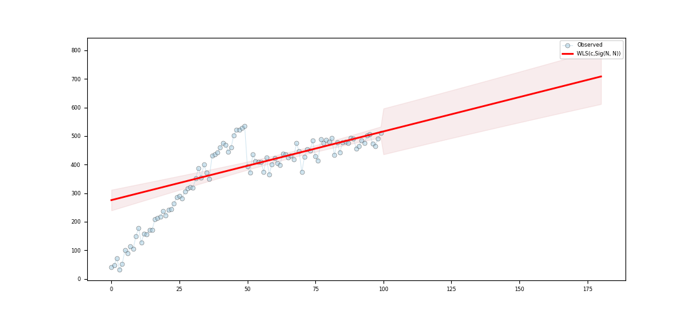

Note
Click here to download the full example code
WLS basic¶
Out:
c:\users\kelda\desktop\repositories\virtualenvs\venvpy39-datablend\lib\site-packages\statsmodels\regression\linear_model.py:764: RuntimeWarning: divide by zero encountered in log
llf += 0.5 * np.sum(np.log(self.weights))
Series:
wls-rsquared 0.5612
wls-rsquared_adj 0.5567
wls-fvalue 125.316
wls-fprob 0.0
wls-aic inf
wls-bic inf
wls-llf -inf
wls-mse_model 200170.3041
wls-mse_resid 1597.3248
wls-mse_total 3603.1124
wls-const_coef 251.5341
wls-const_std 17.212
wls-const_tvalue 14.6139
wls-const_tprob 0.0
wls-const_cil 217.3775
wls-const_ciu 285.6907
wls-x1_coef 2.7102
wls-x1_std 0.2421
wls-x1_tvalue 11.1945
wls-x1_tprob 0.0
wls-x1_cil 2.2297
wls-x1_ciu 3.1906
wls-s_dw Jarque-Ber...
wls-s_jb_value Prob(JB):
wls-s_jb_prob Cond. No.
wls-s_skew Kurtosis:
wls-s_kurtosis
wls-s_omnibus_value Prob(Omnib...
wls-s_omnibus_prob Skew:
wls-m_dw 0.1617
wls-m_jb_value 3.9856
wls-m_jb_prob 0.1363
wls-m_skew -0.4688
wls-m_kurtosis 3.2782
wls-m_nm_value 4.5876
wls-m_nm_prob 0.1009
wls-m_ks_value 0.569
wls-m_ks_prob 0.0
wls-m_shp_value 0.9533
wls-m_shp_prob 0.0014
wls-m_ad_value 2.0575
wls-m_ad_nnorm False
wls-missing raise
wls-exog [[1.0, 0.0...
wls-endog [36.256458...
wls-trend c
wls-weights [0.0013350...
wls-W <pyamr.met...
wls-model <statsmode...
wls-id WLS(c,Sig(...
dtype: object
Regression line:
[251.53 254.24 256.95 259.66 262.37 265.08 267.8 270.51 273.22 275.93]
Summary:
WLS Regression Results
==============================================================================
Dep. Variable: y R-squared: 0.561
Model: WLS Adj. R-squared: 0.557
Method: Least Squares F-statistic: 125.3
Date: Fri, 19 Mar 2021 Prob (F-statistic): 3.16e-19
Time: 15:40:59 Log-Likelihood: -inf
No. Observations: 100 AIC: inf
Df Residuals: 98 BIC: inf
Df Model: 1
Covariance Type: nonrobust
==============================================================================
coef std err t P>|t| [0.025 0.975]
------------------------------------------------------------------------------
const 251.5341 17.212 14.614 0.000 217.378 285.691
x1 2.7102 0.242 11.194 0.000 2.230 3.191
==============================================================================
Omnibus: 8.959 Durbin-Watson: 0.515
Prob(Omnibus): 0.011 Jarque-Bera (JB): 10.043
Skew: 0.521 Prob(JB): 0.00659
Kurtosis: 4.151 Cond. No. 218.
Normal (N): 4.588 Prob(N): 0.101
==============================================================================
8 9 10 11 12 13 14 15 16 17 18 19 20 21 22 23 24 25 26 27 28 29 30 31 32 33 34 35 36 37 38 39 40 41 42 43 44 45 46 47 48 49 50 51 52 53 54 55 56 57 58 59 60 61 62 63 64 65 66 67 68 69 70 71 72 73 74 75 76 77 78 79 80 81 82 83 84 85 86 87 88 89 90 91 92 93 94 95 96 97 98 99 100 101 102 103 104 105 106 107 108 109 110 111 112 113 114 115 116 117 118 119 | # Import class.
import sys
import numpy as np
import pandas as pd
import matplotlib as mpl
import matplotlib.pyplot as plt
import statsmodels.api as sm
import statsmodels.robust.norms as norms
# import weights.
from pyamr.datasets.load import make_timeseries
from pyamr.core.regression.wls import WLSWrapper
from pyamr.metrics.weights import SigmoidA
# ----------------------------
# set basic configuration
# ----------------------------
# Matplotlib options
mpl.rc('legend', fontsize=6)
mpl.rc('xtick', labelsize=6)
mpl.rc('ytick', labelsize=6)
# Set pandas configuration.
pd.set_option('display.max_colwidth', 14)
pd.set_option('display.width', 150)
pd.set_option('display.precision', 4)
# ----------------------------
# create data
# ----------------------------
# Create timeseries data
x, y, f = make_timeseries()
# Create method to compute weights from frequencies
W = SigmoidA(r=200, g=0.5, offset=0.0, scale=1.0)
# Note that the function fit will call M.weights(weights) inside and will
# store the M converter in the instance. Therefore, the code execute is
# equivalent to <weights=M.weights(f)> with the only difference being that
# the weight converter is not saved.
wls = WLSWrapper(estimator=sm.WLS).fit( \
exog=x, endog=y, trend='c', weights=f,
W=W, missing='raise')
# Print series.
print("\nSeries:")
print(wls.as_series())
# Print regression line.
print("\nRegression line:")
print(wls.line(np.arange(10)))
# Print summary.
print("\nSummary:")
print(wls.as_summary())
# -----------------
# Save & Load
# -----------------
# File location
#fname = '../../examples/saved/wls-sample.pickle'
# Save
#wls.save(fname=fname)
# Load
#wls = WLSWrapper().load(fname=fname)
# -------------
# Example I
# -------------
# This example shows how to make predictions using the wrapper and how
# to plot the resultin data. In addition, it compares the intervales
# provided by get_prediction (confidence intervals) and the intervals
# provided by wls_prediction_std (prediction intervals).
#
# To Do: Implement methods to compute CI and PI (see regression).
# Variables.
start, end = None, 180
# Compute predictions (exogenous?). It returns a 2D array
# where the rows contain the time (t), the mean, the lower
# and upper confidence (or prediction?) interval.
preds = wls.get_prediction(start=start, end=end)
# Create figure
fig, ax = plt.subplots(1, 1, figsize=(11,5))
# Plotting confidence intervals
# -----------------------------
# Plot truth values.
ax.plot(x, y, color='#A6CEE3', alpha=0.5, marker='o',
markeredgecolor='k', markeredgewidth=0.5,
markersize=5, linewidth=0.75, label='Observed')
# Plot forecasted values.
ax.plot(preds[0,:], preds[1, :], color='#FF0000', alpha=1.00,
linewidth=2.0, label=wls._identifier(short=True))
# Plot the confidence intervals.
ax.fill_between(preds[0, :], preds[2, :],
preds[3, :],
color='r',
alpha=0.1)
# Legend
plt.legend()
# Show
plt.show()
|
Total running time of the script: ( 0 minutes 0.110 seconds)